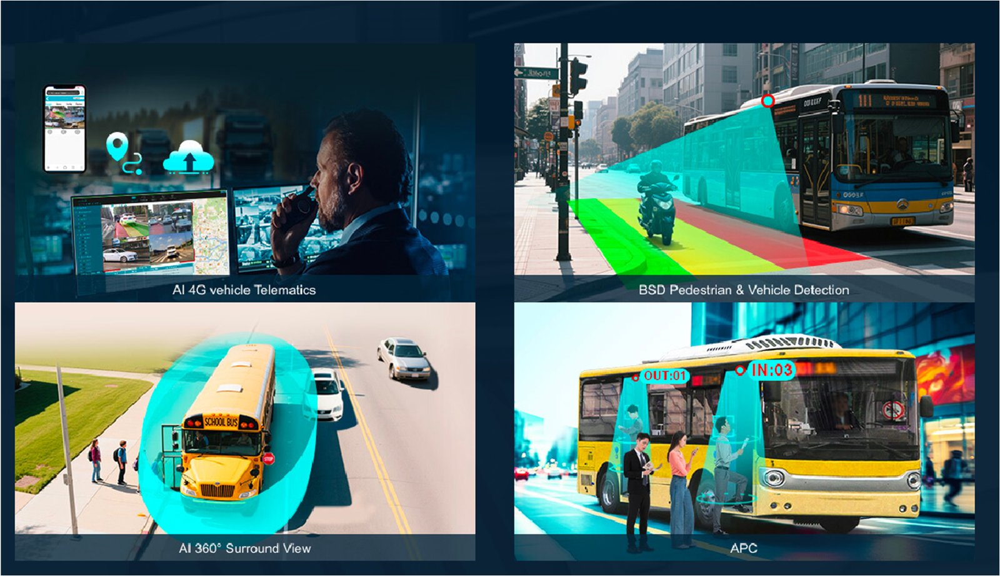
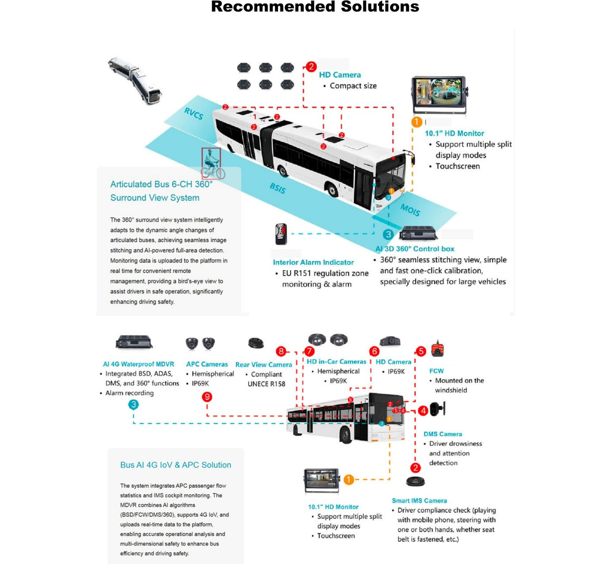
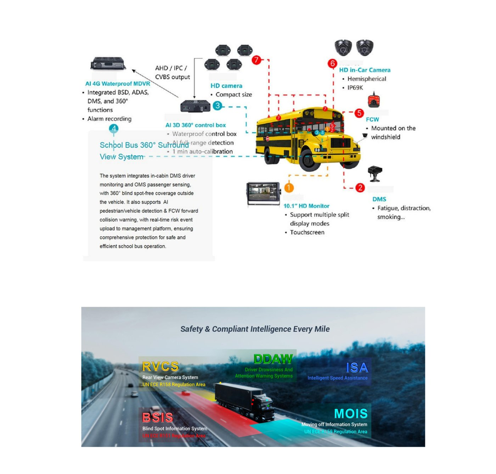

Soluciones para transporte público
Seguridad y gestión inteligente para buses y flotas de pasajeros
Problemas
Las operaciones de vehículos comerciales enfrentan desafíos duales en seguridad y gestión. El gran tamaño y los puntos ciegos de los vehículos incrementan el riesgo de colisión durante maniobras de reversa, cambios de carril y conducción nocturna; los viajes de larga distancia elevan riesgos como la fatiga y distracción del conductor, mientras la carga permanece vulnerable al robo o daño.
En el plano de gestión, la dependencia de procesos manuales reduce la eficiencia de programación, las altas tasas de viajes en vacío y el mantenimiento demorado elevan los costos operativos, y la ausencia de monitoreo digital dificulta la toma de decisiones basada en datos — todo esto agravado por regulaciones de cumplimiento que varían según la región.
Enfoque de la solución
Las soluciones para vehículos comerciales de FleetKAM abordan estos desafíos clave: el sistema IMS en cabina detecta y alerta comportamientos anómalos del conductor o pasajeros en tiempo real, mientras que BSD, AI 360° surround view y AI CMS eliminan los riesgos de puntos ciegos.
La solución también integra gestión remota del vehículo por AI 4G, analítica de espacio de carga y funciones APC para potenciar la eficiencia de la flota. La mayoría de los productos FleetKAM cumplen con estándares de la UE y normativas globales de cumplimiento, asegurando operaciones comerciales seguras y eficientes a nivel mundial.

Sistemas recomendados
Sistemas y componentes para transporte público
Sistema 01 · Aplicación: bus articulado
Articulated Bus 6-CH 360° Surround View System
El sistema de vista envolvente 360° se adapta inteligentemente a los cambios dinámicos de ángulo de los buses articulados, logrando un cosido de imagen sin costuras y detección de área completa con IA. Los datos de monitoreo se suben a la plataforma en tiempo real para una gestión remota conveniente, brindando una vista de pájaro que asiste a los conductores en una operación segura y mejorando significativamente la seguridad de manejo.
Sistema 02
Bus AI 4G IoV & APC Solution
El sistema integra estadísticas de flujo de pasajeros APC y monitoreo de cabina IMS. El MDVR combina algoritmos de IA (BSD/FCW/DMS/360°), soporta IoV 4G, y sube datos en tiempo real a la plataforma, habilitando un análisis operativo preciso y seguridad multidimensional para mejorar la eficiencia y seguridad de manejo del bus.

Sistema 03 · Aplicación: bus escolar
School Bus 360° Surround View System
El sistema integra monitoreo de conductor DMS en cabina y sensado de pasajeros OMS, con cobertura libre de puntos ciegos de 360° fuera del vehículo. También soporta detección de peatones/vehículos con IA y advertencia de colisión frontal (FCW), con carga de eventos de riesgo en tiempo real a la plataforma de gestión, asegurando protección integral para una operación segura y eficiente del bus escolar.
